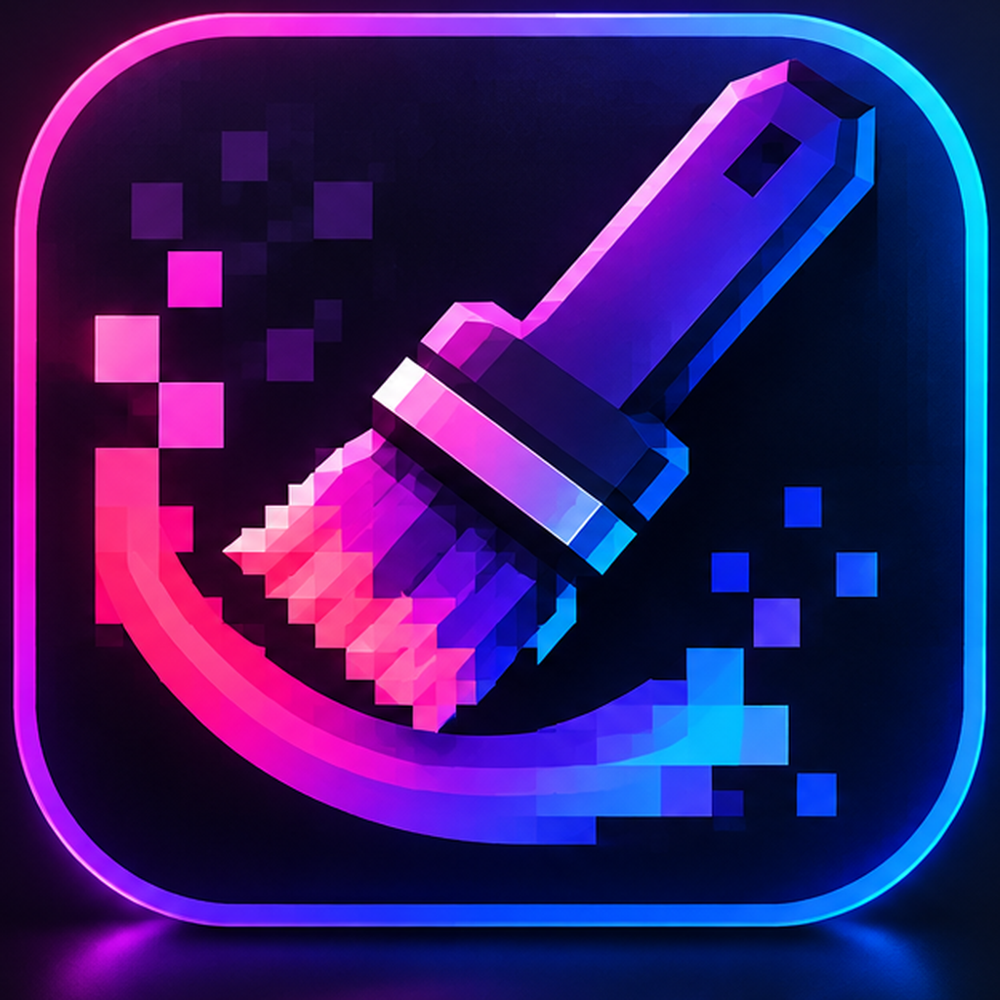

Кисть и ластик
Рисуй свободно. Ластик должен стирать только пиксели под мазком на выбранном слое.
01 / РИСОВАНИЕ
PixForge Studio Скачать бесплатно ↗Знакомься с PixForge Studio — редактором изображений для рисования, работы со слоями и обработки картинок. Всё нужное для твоего следующего проекта.
Набор базовых инструментов, чтобы быстро начать работать с изображениями.
Рисуй свободно. Ластик должен стирать только пиксели под мазком на выбранном слое.
01 / РИСОВАНИЕРазделяй элементы изображения, меняй порядок слоёв и создавай копии.
02 / КОМПОЗИЦИЯНастраивай яркость, контраст и насыщенность, экспериментируй с эффектами.
03 / ОБРАБОТКАПробуй разные идеи и возвращайся к предыдущим шагам с помощью истории действий.
04 / ИСТОРИЯСоздавай простые формы, линии и цветные области для своих работ.
05 / ФОРМЫПодготавливай результат к сохранению в распространённых форматах.
06 / ЭКСПОРТТёмная рабочая область, инструменты слева, слои и настройки справа. Привычная компоновка для тех, кто любит контролировать каждый штрих.
Непрозрачность
Размер кисти
Скачай сборку редактора или следи за новыми версиями.
Windows · Бесплатный сайт · Версия указывается при публикацииДа. Этот статический сайт можно разместить бесплатно на GitHub Pages.
Когда готовый ZIP или EXE будет добавлен в папку downloads и опубликован, кнопка загрузки начнёт скачивать файл.
Да, страница адаптируется к маленьким экранам.
Нет. Эта страница — сайт проекта. Для редактирования изображений используется отдельное приложение PixForge Studio.